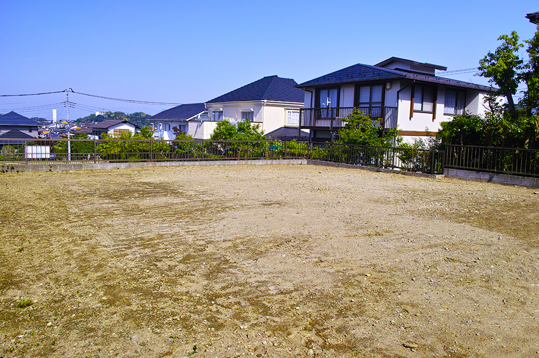

空き家・空き地で
お悩みの方へ
- TOP
- 空き家・空き地でお悩みの方へ
akiya空き地・空き家には早めの対策が必要
空き地・空き家を放置するのはリスクでしかありません。今までと比べて6倍の固定資産税が請求される恐れや、数百万円単位の費用がかかる解体を強いられる可能性もあります。また、劣化した建物が人や物を傷付けると、損害賠償請求を受けてしまいます。
南口不動産は、市川市における不動産売却実績が豊富です。空き地・空き家を高値で素早く売却し、先述したリスクを避ける方法も熟知しています。余計な維持費の支払いや管理の手間を無くすためにも、空き地・空き家にお困りの方は当社にご相談ください。
不動産を相続したまま放置するリスク
不動産を放置するリスクは主に3つあります。
| 老朽化により価値を落とす | 災害・犯罪被害に遭う | 害獣のリスクが高まる | ||
|---|---|---|---|---|
| 人が住んでいない家は風通しが悪く、雨天時などのメンテナンスも行き届かないため、劣化するスピードが速くなります。雨漏りに気付かなかったり、窓ガラスが割れたまま放置したりするとさらに価値を落とし、やがて朽ち果ててしまいます。 | 災害・犯罪被害に遭う | 建物が劣化した状態で台風などの災害に見舞われると、建物が倒壊するリスクが高くなります。人目が行き届かないため犯罪の現場になりがちな点にも要注意です。振り込め詐欺の拠点といて使われたり、放火されたりするリスクがあります。 | 害獣のリスクが高まる | 特に一戸建ての場合、庭の草木が伸び続けたせいで猫・犬・アライグマなどが近付き、空き家に住み着くケースが多々見られます。シロアリの被害に気付きにくいことや、蜂の巣ができて近隣の住人に迷惑をかける場合があることにも要注意です。 |
空き家を「売るか」「貸すか」お悩みなら、まずご相談ください
南口不動産では、お持ちの不動産をどのように扱うか決めかねている方からのご相談もお待ちしております。空き家・空き地を売るか、それとも誰かに貸して利益を得るかお悩みの場合は、まず当社にご相談ください。
当社は不動産売却だけでなく不動産管理の実績にも長けており、お手持ちの不動産の立地や状態を細かく分析した上で最適な取り扱い方をご提案いたします。司法書士や会計士とも連携できるため、相続人同士のトラブルや相続税のお悩みをお抱えの方もご安心ください。
使う予定の無い空き家は即時「売却」がおすすめ
現在住む予定がなく、この先も利用する予定の無い空き家をお持ちなら「即時売却」がおすすめです。こちらでは、その理由を3つのポイントに分けて解説します。
毎年の税負担が無くなる
固定資産税と都市計画税は空き家に対しても毎年課税されます。誰も住む人がおらず、今後住む予定のない空き家だとしても、所有している限りはまとまった税金を毎年支払い続けなければなりません。税額は立地や広さにより異なりますが、数十万円に及ぶことが一般的です。売却の判断が遅れると、数百万円単位の税金を無駄に支払うことになりかねません。
損害賠償を請求されるリスクが無くなる
空き家は人が住んでいる家と比べて劣化しやすく、地震や台風などの影響を受けて崩落・倒壊する可能性が高くなります。瓦が飛んで近所の窓ガラスを割ったり、庭の樹木が倒壊して人を傷付けたりする可能性はゼロとはいえません。所有する空き家が物的・人的な被害を発生させた場合は、空き家の持ち主が損害賠償請求を受ける可能性があります。
実質的な増税を回避でき、解体費用を請求されるリスクも無くなる

2015年に施行された「空き家対策特別措置法」により、空き家が「特定空き家」に認定される可能性があります。その場合は減税措置が適用されず、従来の6倍の固定資産税と3倍の都市計画税を支払わなければなりません。さらに行政から空き家を解体するよう要求される場合があり、これを無視すると行政代執行で解体処分が行われ、いずれにしても解体費用が所有者に請求されます。このようなリスクを避けるためにも、空き家は早めに売却しましょう。
使わない空き家をすぐに売却すべき3つの理由
空き家の売却により得られるメリットが3つあります。空き家を所有する期間が長ければ長いほど出費が増えてリスクも高まるため、使わない空き家はできるだけ早く売却するのがポイントです。
固定資産税などの無駄なコストを削減できる
空き家を売却すると、翌年以降の固定資産税・都市計画税がかからなくなります。固定資産税・都市計画税は土地や建物を所有している限り必ずかかる税金です。また、将来的に「特定空き家」に指定された場合は「住宅用地の特例」が適用されなくなるため注意しましょう。特例の適用が外れると、固定資産税は従来の6倍、都市計画税は従来の3倍に上がります。
メンテナンスに手間と費用がかからなくなる
空き家を手放せばメンテナンスをする必要がなくなります。空き家は人が住んでいる家と比べて劣化するスピードが速く、定期的にメンテナンスをしなければ倒壊のリスクが高まるため要注意です。建物や設備の一部が台風などの影響により破壊され、周辺の人を傷付けたり、物を壊したりした場合、損害賠償請求に応じなければなりません。
解体費用の請求を憂慮せずに済む
先述した「特定空き家」に指定された場合、周囲を危険から守ることを目的に行政から建物の解体を要求される可能性があります。この要求を無視すると、行政代執行により強制的に解体が行われるかもしれません。いずれの場合も解体にかかる費用は自己負担です。解体費用の目安は木造で120万円～300万円ですが、事前に売却しておけば、このような大金が突然請求されるリスクが無くなります。
空き家を解体して土地のみで
売却するする手もある
解体には高額な費用がかかりますが、結果として解体したほうが高く、スムーズに空き家を売却できる可能性があります。
ボロボロな状態の空き家は買主様から見て邪魔な存在です。購入後に高額な費用を支払ってリフォーム・リノベーションしたり、自ら解体して住宅等を建て直したりしなければ利用できません。
空き家を解体して更地の状態で売却すれば、古家付きの土地よりも購入希望者が見つかりやすくなります。不動産会社とも相談の上、ひとつの選択肢として解体も検討しましょう。
土地売却はターゲットを絞り込んで戦略を変えることが大切
土地売却を成功させるポイントは、売却先のターゲットを絞り込むことです。土地の立地や面積から最適な用途を判断し、マイホームを建てる土地を探す一般消費者をターゲットとするのか、土地活用を検討中の企業や投資家をターゲットとするのかを決めましょう。
特に企業・投資家をターゲットにする場合は、将来の収益を見越して相場よりも高い売却価格を付けるのがおすすめです。また、一般消費者以外の顧客やコネクションを持つ不動産会社に相談を持ち掛けましょう。
土地・建物の価値は
今からでも上げられます
土地や建物の価値を上げてから売却する方法もあります。例えば境界が未確定な土地の場合は測量を行ったり、住宅や倉庫などの建物を撤去して更地にしたりすると、そのまま売却するよりも高値が付く可能性があるのです。
建物は築年数の経過とともに価値を落としますが、外壁塗装などのリフォームやリノベーションを行ったり、ホームインスペクションで安全性を証明したりすると価値を高められます。不動産会社と相談しながら、費用対効果を見込める対策があるか調べましょう。